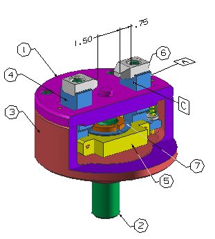

PMI 注释平面
所有 PMI 都必须放置在您部件文件中的一个注释平面上，平面的位置取决于 PMI 类型以及您在注释对话框的方位组中指定的平面选项。
您可以将平面选项设为下列选项之一：
-
XY 平面 – 将注释平面设置为 WCS 的 XY 平面
-
 XZ 平面 – 将注释平面设置为 WCS 的 XZ 平面
XZ 平面 – 将注释平面设置为 WCS 的 XZ 平面 -
 YZ 平面 – 将注释平面设置为 WCS 的 YZ 平面
YZ 平面 – 将注释平面设置为 WCS 的 YZ 平面 -
基于模型视图 – 根据当前模型视图方位来设置注释平面
-
用户定义的上一个 – 根据用户定义的上一个方位来设置注释平面
-
 用户定义 – 让您指定注释平面
用户定义 – 让您指定注释平面
当您使用基于模型视图注释平面时，将在平行于模型视图的平面中创建 PMI 对象，这根据您创建 PMI 对象时的光标位置。
当注释平面是 WCS 的一个主要平面时，可以在图形窗口中使用快速定向工具。这些平面可以用于重置注释平面。
|

|
位于不同注释平面上的 PMI 示例
将 PMI 拖动到新位置
没有对话框或工具条处于活动状态时，您可以沿 PMI 对象的注释平面将其拖动到新位置。
位于何处？
设置默认注释平面：
|
应用模块 |
PMI |
|
菜单 |
首选项→产品制造信息→PMI |
|
对话框中的位置 |
显示选项卡→注释平面 |
PMI 尺寸：
|
应用模块 |
PMI |
|
工具条 |
选择条→注释平面列表 |
其它 PMI 类型：
|
应用模块 |
PMI |
|
对话框中的位置 |
任何 PMI 对话框→原点组→平面列表 |